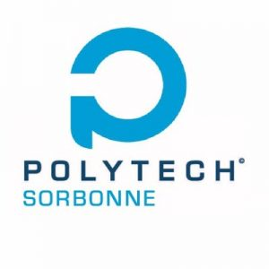
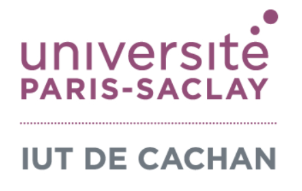

🎓 Apprenti ingénieur en Électronique et Informatique à Polytech Sorbonne
À la recherche d'un contrat d'apprentissage de 3 ans

Formation par apprentissage (3 ans) | Polytech Sorbonne Université

Spécialité Électronique Embarquée | IUT de Cachan - Université Paris-Saclay
Réalisation d'un affichage interactif de mesure ESD (-2000V à +2000V) avec Arduino et capteur Keyence.
Détails techniques → Projet S5 - IUT CachanMaîtrise de la chaîne CFAO (GALAAD 3 / Percival) et fabrication de PCB de précision.
Détails techniques → Stage - RATP INFRAInterventions préventives et correctives sur les systèmes de portes palières et COPP2.
Détails techniques → Projet S3 & S4 - IUT CachanConception d'une interface matérielle HID et routage d'une carte électronique sous KiCad.
Détails techniques → Projet S1 - IUT CachanFabrication de PCB et programmation d'un robot suiveur de ligne blanche pour compétition.
Détails techniques →